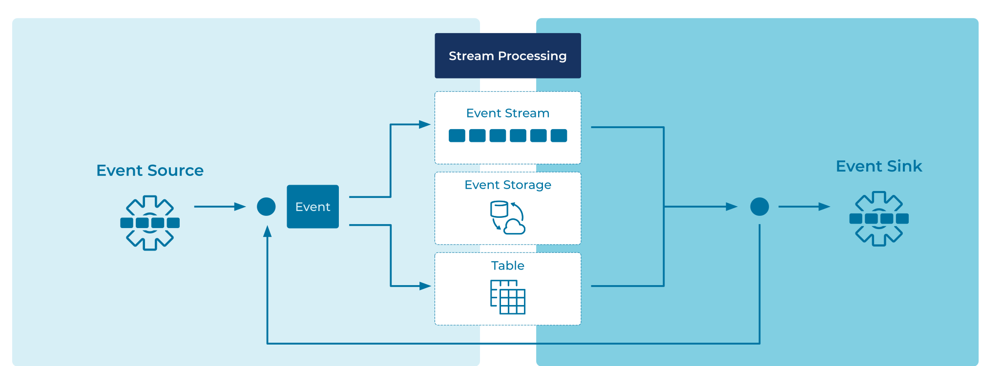

Event Streaming Platform
Companies are rarely built on a single datastore and a single application to interact with it. Typically a company may have hundreds or thousands of applications, databases, data warehouses, or other data stores. The company's data is spread across these resources and the interconnection between them is immensely complicated. In larger enterprises, multiple lines of business can complicate the situation even further. Modern software architectures, like microservices and SaaS applications, are also adding complexity as engineers are tasked with weaving the entire infrastructure together cohesively.
Furthermore, companies can no longer survive without reacting to Events within their business in real-time. Customers and business partners expect immediate reactions and rich interactive applications. Today, data is in motion, and engineering teams needs to model applications to process business requirements as a stream of events, not as data at rest, sitting idly in a traditional data store.
Problem
What architecture can we use to model everything within our business as streams of events, creating a modern, fault tolerant, and scalable platform for building modern applications?
Solution

We can design business processes and applications around Event Streams. Everything from sales, orders, trades, customer experiences, sensor readings and database updates are modeled as an Event. Events are written to the Event Streaming Platform once, allowing distributed functions within the business to react in real-time. Systems external to the Event Streaming Platform are integrated using Event Sources and Event Sinks. Business logic is built within Event Processing Applications, which are composed of Event Processors that read and write events from Event Streams.
Implementation
Apache Kafka® is the most popular Event Streaming Platform, designed to address the business requirements in a modern distributed architecture. Kafka allows reading, writing, processing, querying, and reacting to Event Streams in a way that's horizontally scalable, fault-tolerant, and simple to use. Kafka is built upon many of the patterns described in this Event Streaming Patterns site.
Fundamentals
Data in Kafka is exchanged as events, which represent facts about something that has occurred. Examples of events include orders, payments, activities, or measurements. In Kafka, events are sometimes also referred to as records or messages, and they contain data and metadata describing the event.
Events are written to, stored, and read from Event Streams. In Kafka, these streams are called topics. Topics have names and generally contain "related" records of a particular use case, such as customer payments. Topics are modeled as durable, distributed, append only logs in the Event Store. See this Apache Kafka 101 video for more details on Kafka topics.
Applications that write events to topics are called Producers. Producers may come in many forms and can be generalized in the pattern Event Source. Reading events is performed by Consumers, which can be generalized into Event Sinks. Consumers typically operate in a distributed, coordinated fashion to increase scale and fault tolerance. Event Processing Applications act as both event sources and event sinks.
Applications which use the basic producing and consuming described above are referred to as "clients". These client applications can be authored in a variety of programming languages, including: Java, Go, C/C++, .NET, and Python.
Stream Processing
Event Processing Applications can be built using a variety of techniques on top of Kafka.
ksqlDB
The streaming database ksqlDB allows you to build Event Processing Applications using SQL syntax. It ships with an API, CLI, and UI. ksqlDB's elastic architecture decouples its distributed compute layer from its distributed storage layer, for which it uses and tightly integrates with Kafka.
Kafka Streams
The Kafka Streams client library of Apache Kafka allows you to build elastic applications and microservices on the JV, with languages like Java and Scala. An application can run in a distributed fashion across multiple instances for better scalability and fault-tolerance.
Data Integrations
The Kafka Connect framework of Apache Kafka allows you to scalably and reliably integrate cloud services and data systems external to Kafka into the Event Streaming Platform. Here, data of these systems is set in motion by continuously importing and/or exporting this data as Event Streams through Kafka connectors. There are hundreds of ready-to-use Kafka connectors available on Confluent Hub. On-boarding existing data systems onto Kafka is often the first step in the journey of adopting an Event Streaming Platform.
Source Connectors pull data into Kafka topics from sources such as traditional databases, cloud object storage services, or SaaS products like Salesforce. Advanced integrations are possible with patterns such as Database Write Through and Database Write Aside.
Sink Connectors are the complementary pattern to Source Connectors. While source connectors bring data into the Event Streaming Platform continuously, sinks continuously deliver data from Kafka streams to external cloud services and systems. Common destination systems include cloud data warehouse services, function-based serverless compute services, relational databases, Elasticsearch, and cloud object storage services.
Considerations
Event Streaming Platforms are distributed computing systems made up of a diverse set of components. Because building and operating such a platform requires significant engineering expertise and resources, many organizations opt for a fully managed Kafka service like Confluent Cloud, rather than self-managing the platform, so that they can focus on creating business value.
References
- This pattern is derived from Message Bus in Enterprise Integration Patterns by Gregor Hohpe and Bobby Woolf
- Confluent Cloud is a cloud-native service for Apache Kafka®
- Apache Kafka 101: Introduction provides a primer on "What is Kafka, and how does it work?"